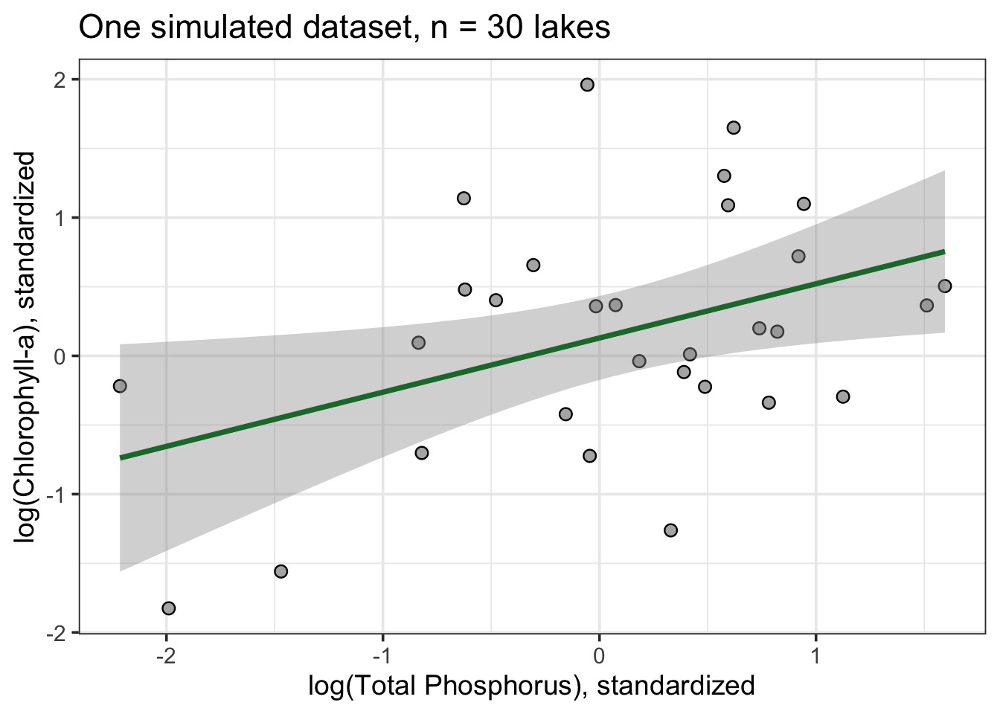
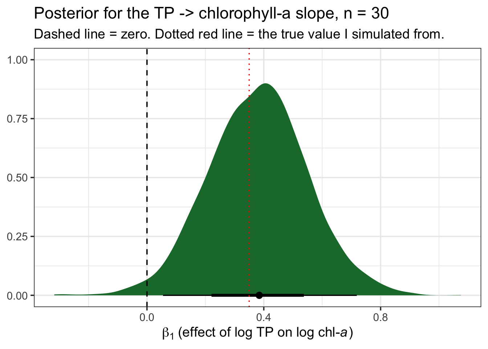
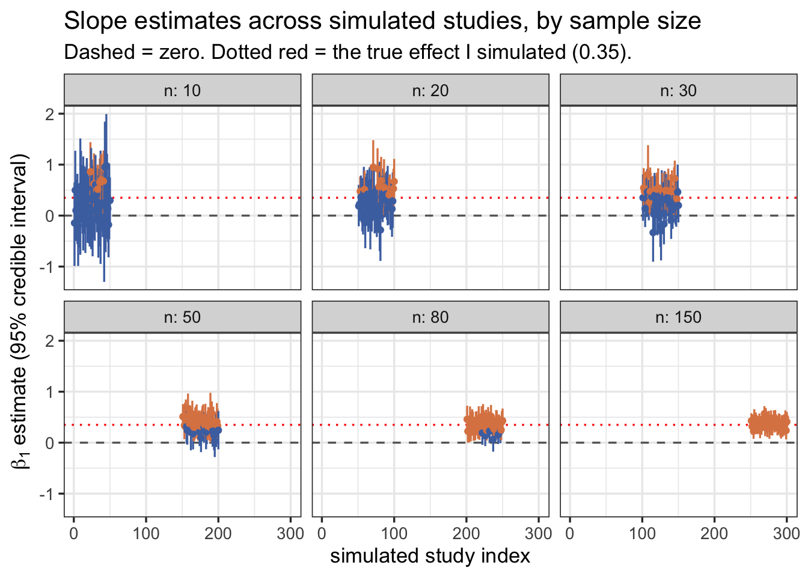
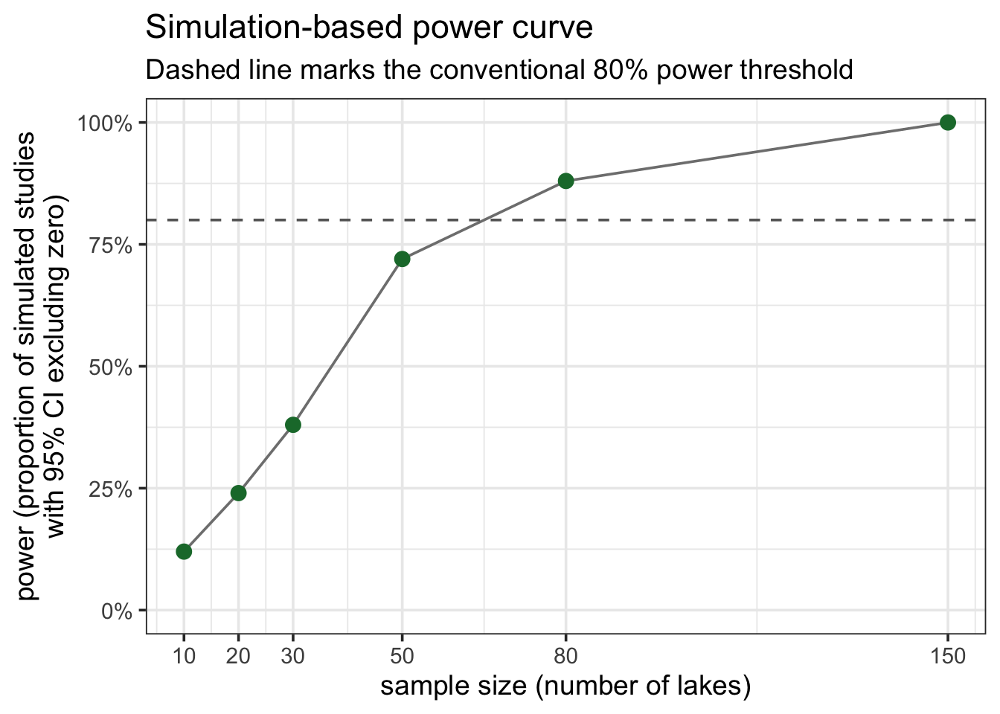
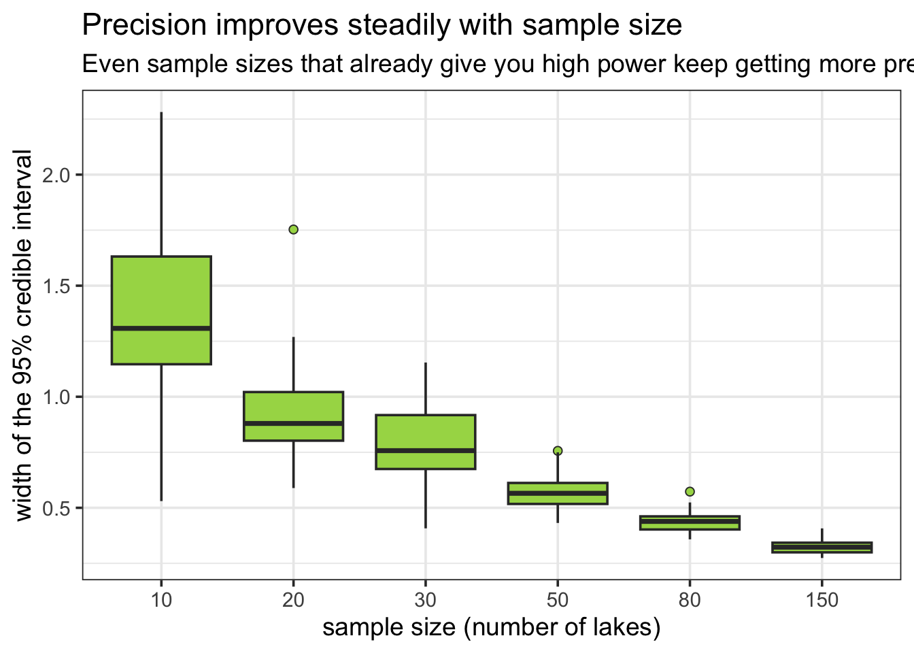

Sample Size Planning
Why I am writing this notebook
I keep running into the same question, from students and from myself: “I only managed to sample 12 ponds/streams/plots this season, is that enough?” Or the opposite worry, after collecting the data: “I found no effect, does that mean there isn’t one?”
Both questions are really about the same thing: how much can the number of observations you collect distort what you learn from a model? I want to show you this directly, rather than just telling you “more data is better.” So in this notebook I simulate a very simple ecological relationship whose true parameters I fix myself, then I repeatedly draw samples of different sizes from that world and fit a Bayesian linear regression with brms to each one. Since I know the ground truth (I made it up), I can watch, sample size by sample size, how close my estimates get to it, how wide my uncertainty is, and how often I would draw the wrong conclusion if I only had one dataset in front of me — which, in real life, is exactly the situation you are always in.
This is not an abstract exercise. If you design a field campaign, a mesocosm experiment, or a monitoring programme, you are implicitly making a sample-size decision, whether or not you ever compute it explicitly. I would rather you make that decision with some idea of its consequences.
I am basing the simulation workflow on two blog posts I like a lot, and that I recommend you read directly if this notebook makes you want to go deeper:
- A. Solomon Kurz, Bayesian power analysis: Part I. Prepare to reject
\(H_0\)with simulation - Tyson S. Barrett, Bayesian Power Analysis with
data.table,tidyverse, andbrms, which replicates and extends Kurz’s approach and adds power curves across several sample sizes, which is exactly the part I lean on most below.
Both posts work with a two-group comparison (treatment vs. control). I am going to adapt the same logic to a case you will run into constantly in ecology: a simple linear regression between two continuous variables.
A word on vocabulary before we start:
Power is a frequentist concept: the probability that, if the true effect is what you assume it is, your analysis would correctly reject the null hypothesis. It is not a fully “Bayesian” quantity, since Bayesians do not test null hypotheses in the classical sense. But I can still ask an analogous, useful question: given the effect size I expect, how often would my 95% credible interval for the slope exclude zero? That is the quantity I am going to simulate here, following Kurz and Barrett. It is a pragmatic, simulation-based way to reason about sample size, not a philosophical statement about what a Bayesian “should” care about.
The ecological scenario
Let’s say you are interested in eutrophication, and specifically in how total phosphorus (TP) concentration in a lake predicts chlorophyll-a concentration (a common proxy for phytoplankton biomass). This is one of the best-established relationships in limnology, and a good one to use here because you already have strong prior expectations about its sign and rough magnitude.
I will work on the log-log scale, which is standard for this relationship and which also conveniently turns things into a simple linear model:
\[ \log(\text{chl-}a_i) = \beta_0 + \beta_1 \log(\text{TP}_i) + \varepsilon_i, \quad \varepsilon_i \sim \operatorname{Normal}(0, \sigma) \]
To keep the simulation clean, I standardize both the predictor and the outcome (mean 0, SD 1) before simulating. This means I can talk about \(\beta_1\) directly as a standardized effect size, in the same spirit as Kurz’s and Barrett’s Cohen’s \(d = 0.5\) example. I will fix:
- \(\beta_0 = 0\) (intercept, arbitrary since both variables are standardized)
- \(\beta_1 = 0.35\) (a moderate, ecologically plausible standardized effect of TP on chlorophyll-a)
- \(\sigma = 1\) (residual/process variance, standardized)
I picked \(\beta_1 = 0.35\) on purpose: it is a realistic, not-huge effect. Real ecological signals are rarely as clean as a textbook example, and moderate effects are exactly the ones that are easiest to miss with too little data — which is the whole point of this notebook.
Code
# the "true" world I am simulating from
beta0_true <- 0
beta1_true <- 0.35
sigma_true <- 1Dry run: what does one dataset look like?
Before I jump into simulating many datasets, I want you to see a single one, the same way Kurz starts with a “dry run.” Let’s simulate \(n = 30\) lakes.
Code
# A tibble: 6 x 3
lake_id log_TP log_chla
<int> <dbl> <dbl>
1 1 -0.626 1.14
2 2 0.184 -0.0385
3 3 -0.836 0.0952
4 4 1.60 0.505
5 5 0.330 -1.26
6 6 -0.820 -0.702 Code
ggplot(d30, aes(x = log_TP, y = log_chla)) +
geom_point(shape = 21, size = 2.5, fill = "grey70") +
geom_smooth(method = "lm", formula = y ~ x, color = "#1B7837", se = TRUE) +
labs(x = "log(Total Phosphorus), standardized",
y = "log(Chlorophyll-a), standardized",
title = "One simulated dataset, n = 30 lakes") +
theme_bw(base_size = 14)
Now let’s fit a Bayesian regression to it. I use weakly-regularizing priors, in the same spirit Kurz recommends: informative enough to keep the sampler in a sensible region, but nowhere near as informative as what I actually simulated the data from (I want the model to have to “discover” the effect from the data, not have me hand it the answer via the priors).
Code
fit_base <- brm(
formula = log_chla ~ 1 + log_TP,
family = gaussian,
data = d30,
prior = c(prior(normal(0, 1), class = Intercept),
prior(normal(0, 1), class = b),
prior(exponential(1), class = sigma)),
iter = 2000, warmup = 1000, chains = 4, cores = 4,
seed = 1,
backend = "cmdstanr",
silent = 2, refresh = 0
)
print(fit_base) Family: gaussian
Links: mu = identity
Formula: log_chla ~ 1 + log_TP
Data: d30 (Number of observations: 30)
Draws: 4 chains, each with iter = 2000; warmup = 1000; thin = 1;
total post-warmup draws = 4000
Regression Coefficients:
Estimate Est.Error l-95% CI u-95% CI Rhat Bulk_ESS Tail_ESS
Intercept 0.13 0.15 -0.17 0.43 1.00 3472 2432
log_TP 0.38 0.17 0.05 0.72 1.00 3429 2642
Further Distributional Parameters:
Estimate Est.Error l-95% CI u-95% CI Rhat Bulk_ESS Tail_ESS
sigma 0.83 0.12 0.65 1.09 1.00 3096 2656
Draws were sampled using sample(hmc). For each parameter, Bulk_ESS
and Tail_ESS are effective sample size measures, and Rhat is the potential
scale reduction factor on split chains (at convergence, Rhat = 1).Code
fit_base |>
spread_draws(b_log_TP) |>
ggplot(aes(x = b_log_TP)) +
stat_halfeye(point_interval = median_qi, .width = c(.66, .95), fill = "#1B7837") +
geom_vline(xintercept = 0, linetype = "dashed") +
geom_vline(xintercept = beta1_true, linetype = "dotted", color = "red") +
labs(x = expression(beta[1]~"(effect of log TP on log chl-"*italic(a)*")"),
y = NULL,
title = "Posterior for the TP -> chlorophyll-a slope, n = 30",
subtitle = "Dashed line = zero. Dotted red line = the true value I simulated from.") +
theme_bw(base_size = 14)
With \(n = 30\), the 95% credible interval already tends to exclude zero, and the posterior mean is somewhere in the neighborhood of the true 0.35 I set. But “somewhere in the neighborhood” is doing a lot of work in that sentence. Let’s see what happens if I repeat this many times, and at different sample sizes.
The full simulation: many datasets, many sample sizes
I am following Barrett’s approach here almost exactly, because it is the cleanest one for what I want: wrap data simulation, model fitting, and parameter extraction into a single function, then map it over a grid of seeds and sample sizes. I reuse fit_base with update() rather than recompiling the Stan model from scratch every time, which is what makes this fast enough to run inside a notebook.
Code
sim_d_and_fit <- function(seed, n) {
d <- sim_d(seed = seed, n = n)
fit_i <- update(fit_base, newdata = d, seed = seed, silent = 2, refresh = 0)
fit_i |>
fixef() |>
as.data.frame() |>
rownames_to_column("parameter") |>
filter(parameter == "log_TP")
}I will explore six sample sizes, from quite small to reasonably large for a typical field campaign: 10, 20, 30, 50, 80, and 150 lakes. For each sample size I run n_sim independent simulated “studies.” I am keeping n_sim modest (50) so the notebook renders in a reasonable time on my laptop — if you were doing this for real, before applying for funding or committing to a field season, I would push this to 500 or 1000 simulations per sample size.
Code
n_sim <- 50
sample_sizes <- c(10, 20, 30, 50, 80, 150)
grid <- expand_grid(n = sample_sizes, seed = 1:n_sim) |>
mutate(seed = row_number()) # unique seed per simulated dataset
sims <- grid |>
mutate(b1 = map2(seed, n, sim_d_and_fit)) |>
unnest(b1)
sims <- sims |>
mutate(powered = if_else(Q2.5 > 0, 1, 0))
head(sims)# A tibble: 6 x 8
n seed parameter Estimate Est.Error Q2.5 Q97.5 powered
<dbl> <int> <chr> <dbl> <dbl> <dbl> <dbl> <dbl>
1 10 1 log_TP -0.146 0.416 -0.990 0.651 0
2 10 2 log_TP 0.499 0.398 -0.308 1.27 0
3 10 3 log_TP 0.101 0.304 -0.497 0.704 0
4 10 4 log_TP 0.0866 0.136 -0.170 0.361 0
5 10 5 log_TP 0.151 0.344 -0.559 0.821 0
6 10 6 log_TP -0.196 0.400 -0.988 0.602 0What sample size buys you: less noise around the truth
The first thing I want you to see is simply how the cloud of slope estimates behaves as \(n\) grows. Each point below is one simulated “study” — one imaginary field season with a given number of lakes — with its 95% credible interval. Points are colored by whether the interval excludes zero (yellow) or not (blue), following Barrett’s plotting convention.
Code
sims |>
ggplot(aes(x = seed, y = Estimate, ymin = Q2.5, ymax = Q97.5, color = factor(powered))) +
geom_hline(yintercept = 0, linetype = "dashed", color = "grey40") +
geom_hline(yintercept = beta1_true, linetype = "dotted", color = "red") +
geom_pointrange(fatten = 1) +
scale_color_manual(values = c("0" = "#4C72B0", "1" = "#DD8452")) +
labs(x = "simulated study index",
y = expression(beta[1]~"estimate (95% credible interval)"),
title = "Slope estimates across simulated studies, by sample size",
subtitle = "Dashed = zero. Dotted red = the true effect I simulated (0.35).") +
facet_wrap(~ n, nrow = 2, labeller = label_both) +
theme_bw(base_size = 13) +
theme(legend.position = "none")
Notice three things happening together as you move from \(n = 10\) to \(n = 150\) panels:
- The point estimates themselves get less scattered. At \(n=10\), some “studies” would have told you the effect is close to zero, or even negative, purely by bad luck of the draw, even though I know the true effect is a solid positive 0.35. At \(n=150\), almost every simulated study lands close to the true value.
- The intervals shrink. This is precision, in Kurz’s sense from the second post in his series: a narrower interval is a more informative one, independent of whether it happens to exclude zero.
- More intervals turn yellow (exclude zero). This is power in the classical sense: with more data, you are more reliably able to detect an effect that is really there.
The power curve
Now let’s summarize the “yellow vs. blue” proportion at each sample size into a single number: my simulation-based estimate of statistical power, exactly as Barrett does for his power-curve figure.
Code
# A tibble: 6 x 2
n power
<dbl> <dbl>
1 10 0.12
2 20 0.24
3 30 0.38
4 50 0.72
5 80 0.88
6 150 1 Code
ggplot(power_curve, aes(x = n, y = power)) +
geom_line(color = "grey50") +
geom_point(size = 3, color = "#1B7837") +
geom_hline(yintercept = 0.8, linetype = "dashed", color = "grey40") +
scale_y_continuous(limits = c(0, 1), labels = scales::percent) +
scale_x_continuous(breaks = sample_sizes) +
labs(x = "sample size (number of lakes)",
y = "power (proportion of simulated studies\nwith 95% CI excluding zero)",
title = "Simulation-based power curve",
subtitle = "Dashed line marks the conventional 80% power threshold") +
theme_bw(base_size = 14)
With only n_sim = 50 simulations per sample size, this curve is itself a bit noisy — you would see it wiggle a little if you reran the whole notebook with a different starting seed. But the overall shape is exactly what you should expect, and is the reason sample-size planning matters: for the effect size and priors I specified here, you would need something in the range of 30-50 lakes to have a reasonable (~80%) chance of confidently detecting a moderate TP -> chlorophyll-a relationship. Below that, you are essentially flipping a weighted coin: sometimes you will get a clean, “significant” result, and sometimes you will not, even though the underlying ecological relationship never changed between simulated studies.
Precision, not just power
I don’t want you to walk away thinking the only thing sample size buys you is a yes/no answer about whether an interval excludes zero. That framing is useful, but it is also exactly the “significance-chasing” mindset that Kurz warns about in the sequel to the post I used here, on precision-oriented sample size planning. What sample size really buys you is a narrower, more trustworthy estimate of the magnitude of the effect, which is usually what you actually care about as an ecologist. A “significant” result from \(n=10\) is not more trustworthy than a “non-significant” one from \(n=150\); if anything, it is less so, because small, noisy samples that do happen to cross the significance threshold tend to overestimate the true effect size (sometimes called “the winner’s curse” or type M/S error in Gelman and Carlin’s terminology).
Let’s look directly at how interval width shrinks with \(n\):
Code
sims |>
mutate(width = Q97.5 - Q2.5) |>
ggplot(aes(x = factor(n), y = width)) +
geom_boxplot(fill = "#A6D854", outlier.shape = 21) +
labs(x = "sample size (number of lakes)",
y = "width of the 95% credible interval",
title = "Precision improves steadily with sample size",
subtitle = "Even sample sizes that already give you high power keep getting more precise") +
theme_bw(base_size = 14)
You can see that interval width keeps shrinking well past the point where power has already reached ~100%. If your goal is not just “detect that TP matters” but “estimate how much chlorophyll-a rises per unit increase in TP, precisely enough to inform a nutrient-reduction target,” you may need a considerably larger sample than the one that merely gets you past the power threshold.
How I would use this in practice
If you are planning your own field season or experiment, I would suggest you go through the same steps I just walked through, but with your own numbers plugged in:
- Write down the simplest possible model of the relationship you expect (here: a single slope, on a sensible transformed/standardized scale).
- Commit to a plausible effect size, ideally from a pilot study, a meta-analysis, or at minimum an honest, defensible guess, the same way I fixed \(\beta_1 = 0.35\) above rather than pulling it out of thin air at the last minute.
- Pick priors you could defend to a skeptical reviewer, not priors chosen to make your desired result more likely to reach significance.
- Simulate datasets across a range of feasible sample sizes and fit your actual model to each one, using
update()to keep it fast. - Look at both power and precision, not just power. Ask yourself what interval width you would actually need to answer your ecological question usefully, not just to get a star next to a p-value.
- Remember that everything above is conditional on the effect size and priors you assumed. If the true effect is smaller than you guessed, your realized power will be lower than the curve above suggests. This is exactly why I like doing this via simulation instead of a one-line power formula: it forces you to be explicit about every assumption you are making, and it is trivial to rerun with a different guess and see how sensitive your conclusions are to it.
I kept this notebook to a single continuous predictor and a Gaussian likelihood on purpose, to keep the logic visible. The exact same workflow — simulate, fit with update(), extract, summarize — extends directly to more complex ecological models: Poisson or negative-binomial counts, hierarchical models with random effects for site or year, or the Gaussian Process models I explore in my GP notebook. The simulation loop does not change; only the sim_d() and model-fitting steps do.